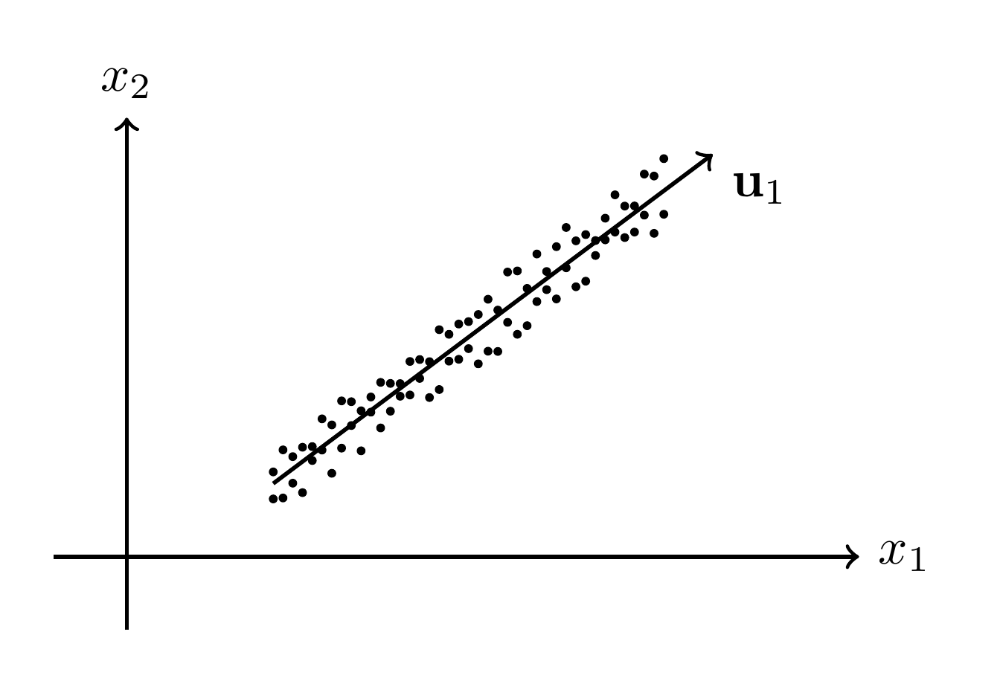
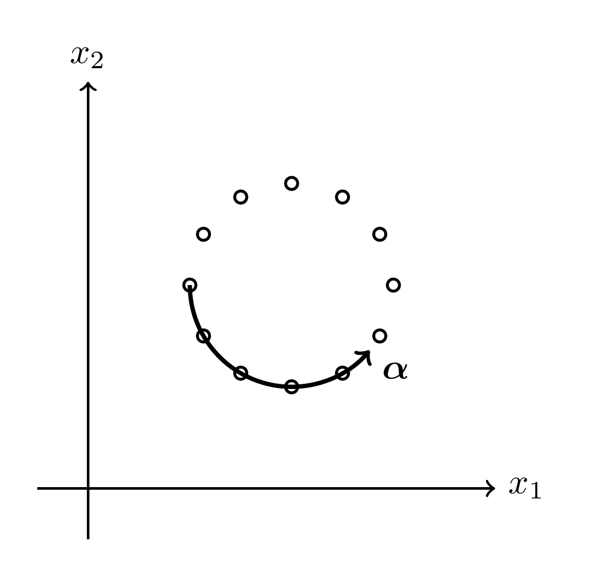
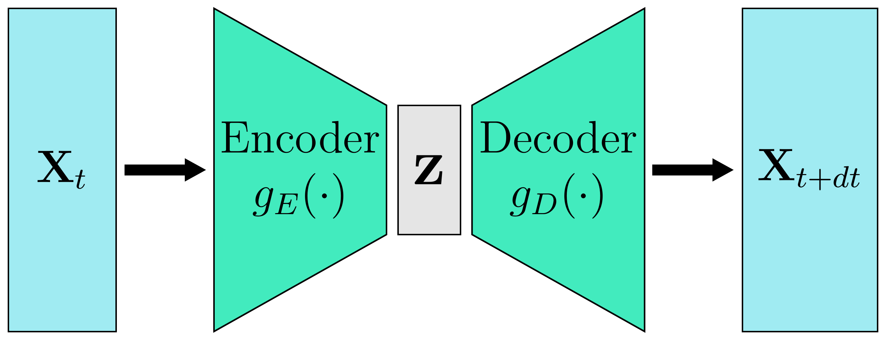
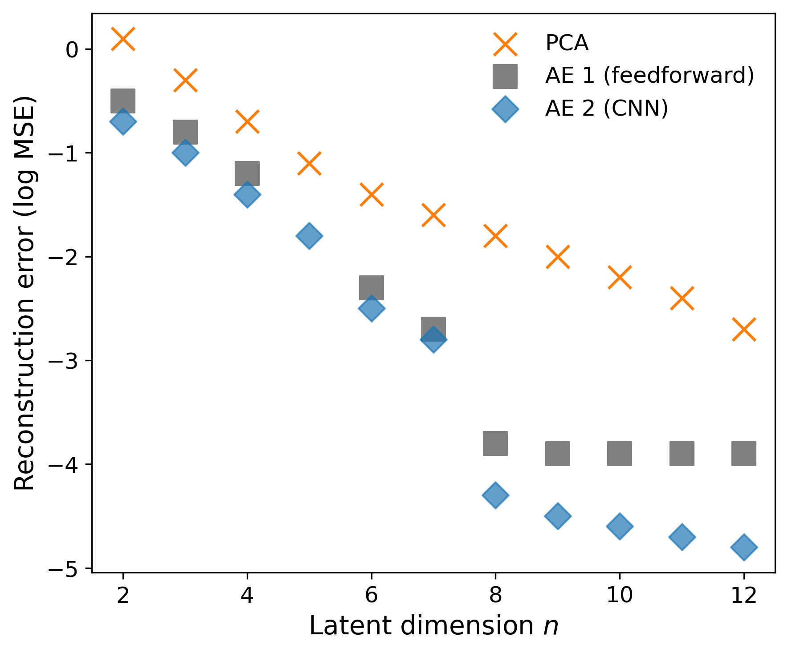
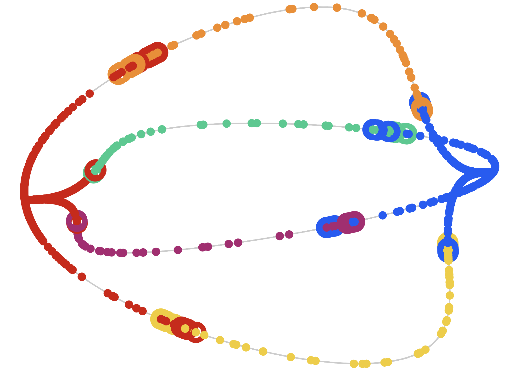
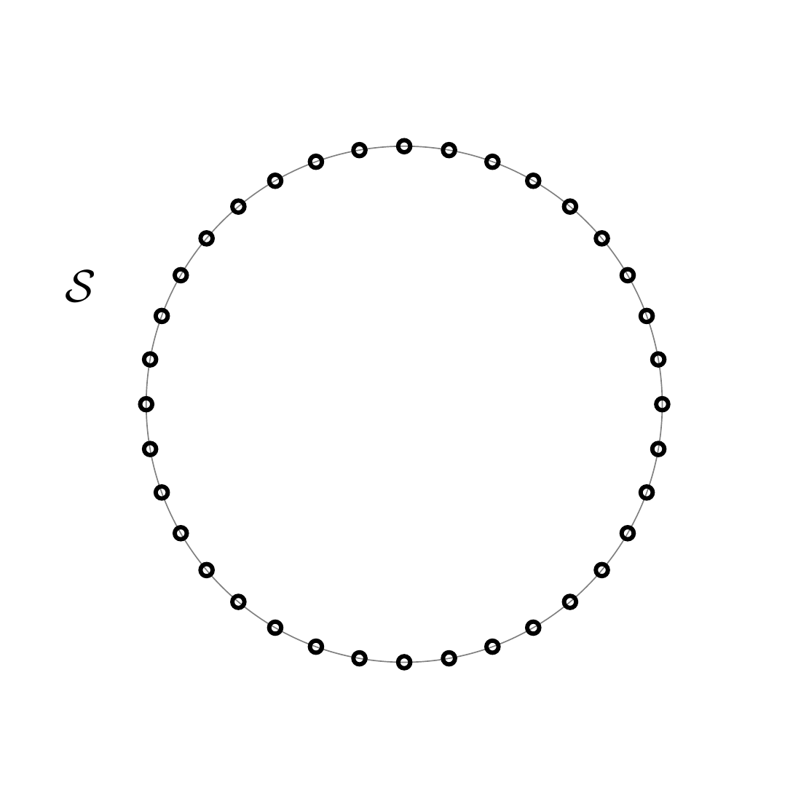
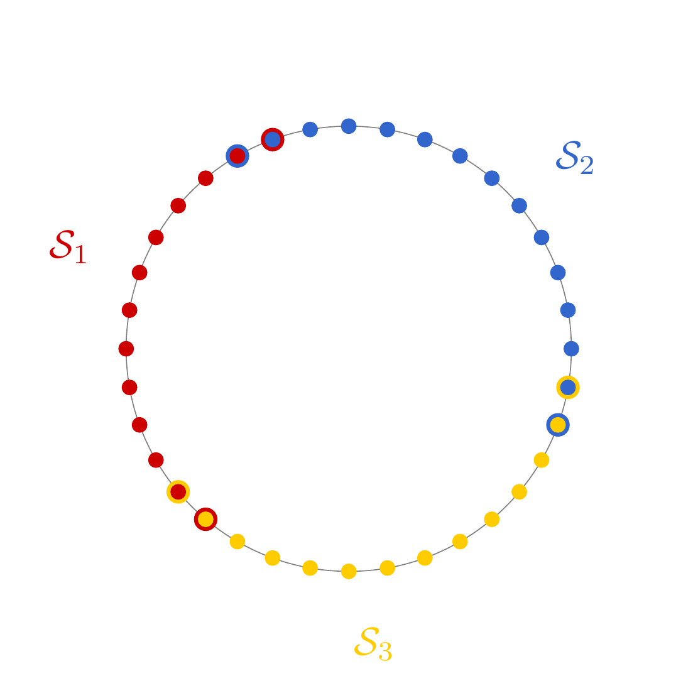
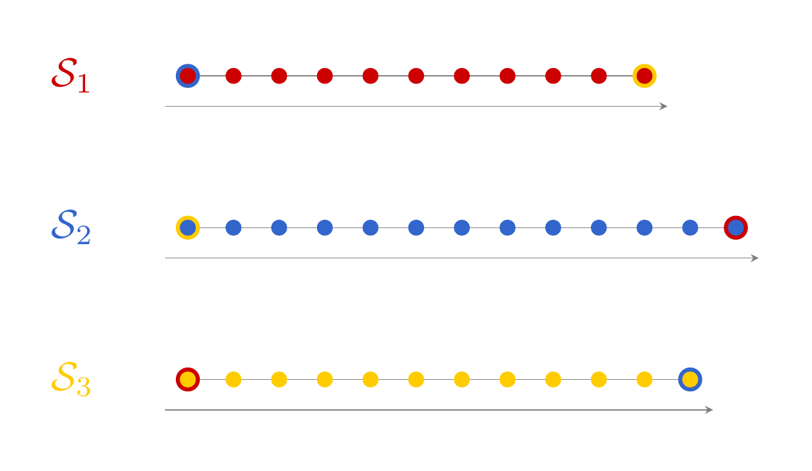

From Data to Discovery
How AI Finds the Few Variables That Control Everything
Presented by Valentin Vogt
April 16, 2025
How are Physical Laws Discovered?
- Traditional Approach: Observation → Data → Intuition → Trial & Error
- Example: Kepler's Second Law: \[ \frac{dA}{dt} = \frac{1}{2} r^2 \frac{d\theta}{dt} = \text{constant} \]
- Today: Massive Data + Computing Power
- Question: How can computers automate or assist discovery?
The Core Problem: Finding \( f \)
Given data \( \{ \mathbf{x}, \mathbf{y} \} \), find a function \( \mathbf{f} \) such that \( \mathbf{f}(\mathbf{x}) = \mathbf{y} \).
This seems like standard function approximation.
BUT for physical laws, we need:
- An explicit form for \( \mathbf{f} \) that's simple and interpretable.
Symbolic Regression
- Goal: Discover a mathematical expression from given data.
-
Searches a space of possible equations
$\Rightarrow$ huge search space - Computationally expensive, struggles with complex systems.
 $y = \log(x)^{\theta_0} + \exp(\theta_1 x)$
$y = \log(x)^{\theta_0} + \exp(\theta_1 x)$
Focus: Dynamical Systems \( \mathbf{X}(t) \)
- Ubiquitous in science & engineering.
- Given time-series data \( \{ \mathbf{X}_t \} \).
- Goal: Predict future states \( \mathbf{X}_{t+dt} \).
- Learn the evolution function \( \mathbf{\Phi}^{dt} \) such that \( \mathbf{\Phi}^{dt}(\mathbf{X}_t) = \mathbf{X}_{t+dt} \).
SINDy: Sparse Identification of Nonlinear Dynamics
Goal: ODE $\dot{\mathbf{X}} = \mathbf{f}(\mathbf{X})$ from $\{\mathbf{X}(t), \dot{\mathbf{X}}(t)\}$.
Assume $\mathbf{f}(\mathbf{X})$ consists of a few terms from a library $\Theta(\mathbf{X})$ of candidate functions (e.g., polynomials $[1, \mathbf{X}, \mathbf{X}^2, \dots]$).
Solve $\dot{\mathbf{X}} \approx \Theta(\mathbf{X}) \Xi$ with sparse regression to find coeffs $\Xi$.
Complexity reduction
- Data: Sensor Fields (Pressure, Temperature), Videos
- Data is very high-dimensional: Much data is redundant or irrelevant for dynamics.
- Key Idea: Can we automatically find the essential state variables?
Examples: Degrees of Freedom
How many variables are needed to describe the state?
What about more complex systems?
[4] (air_dancer)
Intrinsic Dimensionality (ID)
- System state \( \mathbf{X} \) lives in an ambient space \( \mathcal{X} \) (e.g., pixel space).
- The possible states occupy a smaller state space \( \mathcal{S} \subseteq \mathcal{X} \).
- Intrinsic Dimensionality: The minimum number of independent variables needed to describe any state in \( \mathcal{S} \).
- Geometrically: \( \mathrm{dim}(\mathcal{S}) \).
ID Examples: Simple Manifolds
Data points might look high-dimensional but follow simple structures:


The Manifold Hypothesis
Natural high-dimensional data lie on
or near a low-dimensional manifold \( \mathcal{S} \).
Examples:
- Valid English sentences $\subset$ random letter sequences.
- States of physical systems
If we can identify \( \mathcal{S} \), predicting dynamics becomes much simpler $\Rightarrow$ Manifold Learning
Manifold Learning: Finding \( \mathcal{S} \)
Goal: Find a low-dimensional representation
Autoencoders for Dynamics
\( \begin{align*} \mathbf{X} & \in \mathcal{X} \subseteq \mathbb{R}^m \\ \mathbf{\mathrm{z}} & \in \mathbb{R}^n \text{ (latent space)} \\ \end{align*} \)

Objective: Minimize \( ||g_D(g_E(\mathbf{X}_t)) - \mathbf{X}_{t+dt}|| \)
ID Estimation via Autoencoders

[3], Fig. 3aWhy the Naive Approach Fails
- Complexity of \( \mathcal{S} \)
- Non-uniform Sampling
- Result: Poor predictions for less frequent states.

Approach 1: Neural State Variables
(Chen et al., Nat Comput Sci 2022)- Train naive autoencoder \( g = g_D \circ g_E \) with $\textrm{LD} > \textrm{ID}$.
- Train autoencoder \( h \) with $\textrm{LD} = \textrm{ID}$ on latent vectors \( \mathbf{z}_t \). Neural state variables: Latent space of \( h \)
Idea: Find the intrinsic structure within the first latent space.
Approach 2: Learning an Atlas
(Floryan & Graham, Nat Mach Intell 2022)- Decompose \( \mathcal{S} \) into charts \( \mathcal{S}_i \)
- Approximate each chart with a low-dimensional map.
- The chart collection \( \{ \mathcal{S}_i \} \) forms an atlas.
- Learn dynamics locally on each chart.



Case Study: Reaction-Diffusion
Case Study: Reaction-Diffusion
Limit Cycle (attractor): periodic stable solution
{kind=link}
Limitations & Interpretability
- Non-Uniqueness
-
Lack of Units/Physical Meaning:
- The learned variables are abstract mathematical coordinates.
- We can find the number of variables: $\textrm{ID}=4$ for the double pendulum.
- Learned state variables are not \( (\theta_1, \dot{\theta}_1, \theta_2, \dot{\theta}_2) \).
- Mapping to known physics requires further analysis.
Why is this useful?
- Knowing the ID might reveal hidden constraints or conserved quantities.
- Efficient Prediction: Simulate dynamics in the low-dimensional latent space (much faster than full high-dim simulation).
- Guide other methods: Use the known ID to constrain the search space for finding interpretable equations.
- Data Fusion: Combine information from different sources by mapping them to a common latent space.
Recap
- To model complex dynamical systems, find the intrinsic dimensionality.
- Based on rigorous results or Manifold Hypothesis.
- Two techniques to find the state space and learn the dynamics
- Interpretation remains difficult, but we can simulate the system efficiently.
References
- Chen, B. et al. (2022). Automated discovery of fundamental variables hidden in experimental data. Nature Computational Science, 2(7), 433–442. https://doi.org/10.1038/s43588-022-00281-6
- Floryan, D., & Graham, M. D. (2022). Data-driven discovery of intrinsic dynamics. Nature Machine Intelligence, 4(12), 1113–1120. https://doi.org/10.1038/s42256-022-00575-4
- Vlachas, P. R. et al. (2022). Multiscale simulations of complex systems by learning their effective dynamics. Nature Machine Intelligence, 4(4), 359–366. https://doi.org/10.1038/s42256-022-00464-w
- Image data from https://zenodo.org/records/6653856
https://github.com/valentinvogt/zuccmap